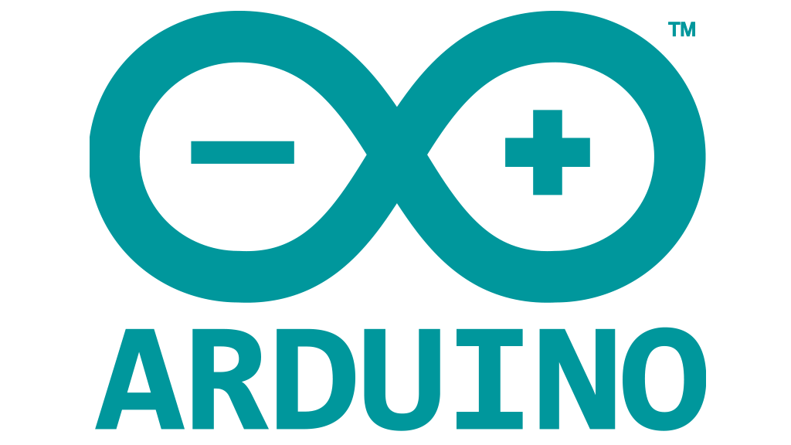
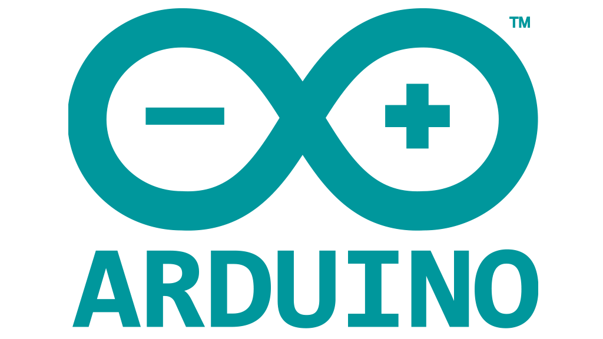
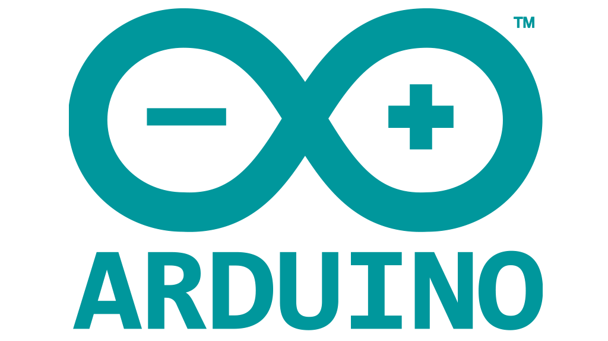

Mes compétences :


 


Je suis actuellement en formation au sein de l'école Campus Academy en première année en filière informatique. Je suis passioné par le digitale depuis longtemps maintenant et je souhaite travailler dans ce domaine. J'ai de nombreuses passions, le sport, l'e-sport et les jeux vidéos, l'évènementiel et la compétition en générale.
Dynamique et motivé, je me sens prêt a travailler dans ce domaine qui m'attire énormément. J'ai déjà acquis certaines compétences grâce à différentes expériences que je présenterais plus bas.
J'ai effectué un stage au sein de l'entreprise Enjin à Cholet sur la période de stage découverte de 3ème, c'est dans celui ci que j'ai réelement compris que c'était dans ce domaine que je voulais travailler.Mon travail consistais a consulter les sites internet d'entreprises dans des domaines prédéfinis et d'évaluer si ces sociétés avaient besoin des services en ce qui concerne le référencement et l'optimisation de leur site internet.



07 83 06 70 82

julien4915@hotmail.com